📌 固定
MIO @misoclub · iOS / Android
時間割・課題・出欠・バイト・予定をひとつに。友達との時間割共有もできる、学生生活の相棒アプリつくりました🎒
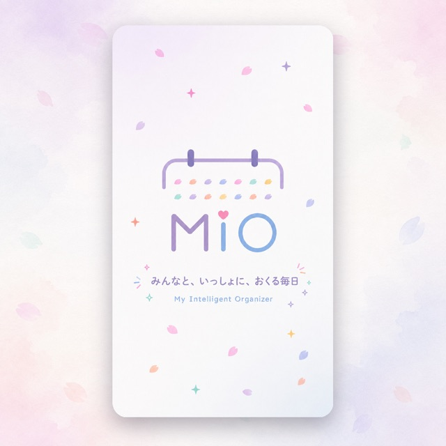
MIOを見る ↗- 💬
- 🔁
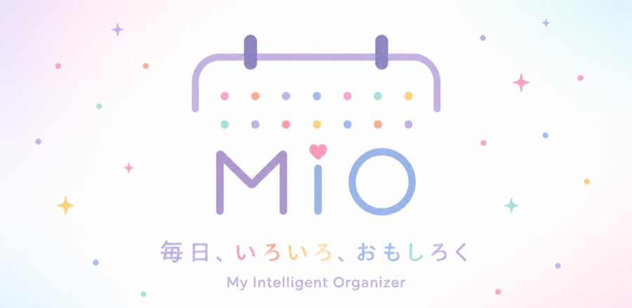
@misoclub
ゲームエンジニア、アプリ開発者
毎日に、ちょうどいいアプリをつくってる。
本業はスマホゲーム開発（Unity / C# / C++）。趣味で個人開発してて、アプリは6本リリース済み。最近は AI でバイブコーディングしてます。よかったらDLしてね📱
※ このページは X（旧Twitter）風にデザインした個人のWeb名刺で、X の公式サイトではありません。本物のXはコチラへどうぞ。
📌 固定
MIO @misoclub · iOS / Android
時間割・課題・出欠・バイト・予定をひとつに。友達との時間割共有もできる、学生生活の相棒アプリつくりました🎒

MIOを見る ↗📌 固定
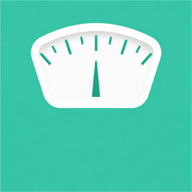
きょうの体重 @misoclub · iOS / Android
毎日の体重を3秒で記録。体脂肪・BMI・グラフ・カレンダーで、ダイエットがゆるっと続く⚖️
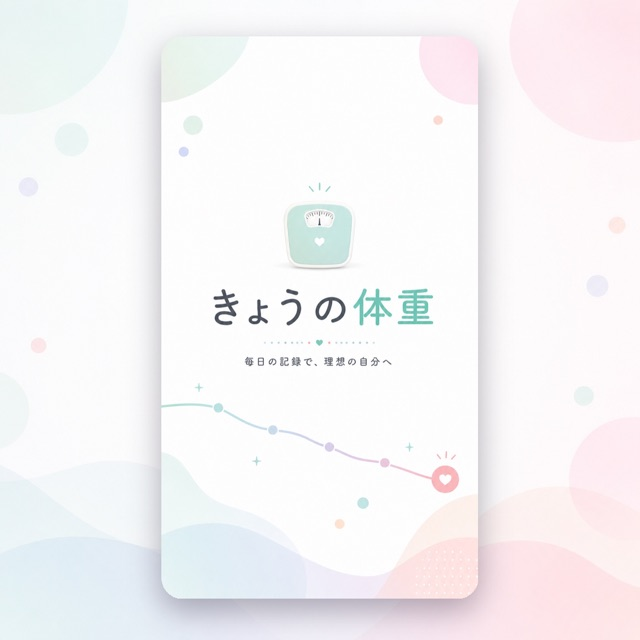
きょうの体重を見る ↗📌 固定
秒速日記 @misoclub · iOS / Android
開いて、打って、送るだけ。思いついた瞬間に書ける日記アプリ。1日に何回でも書けるよ✍️
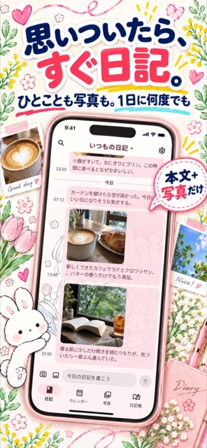
秒速日記を見る ↗ぷろ @misoclub
ほかにもこんなアプリつくってます👇
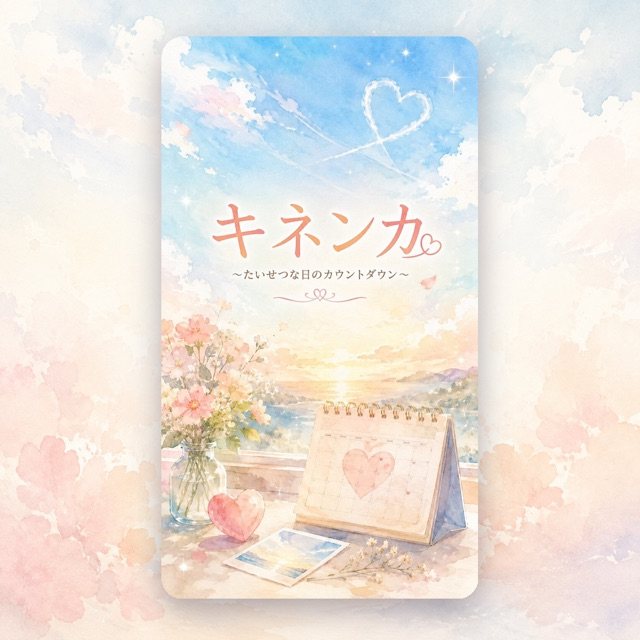
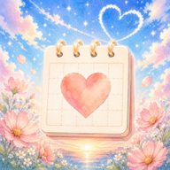
キネンカ記念日までをカウントダウン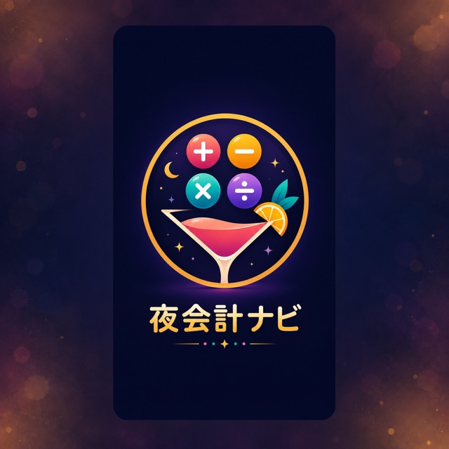
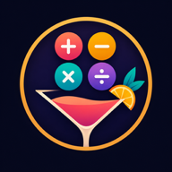
夜会計ナビ今のお会計をリアルタイムに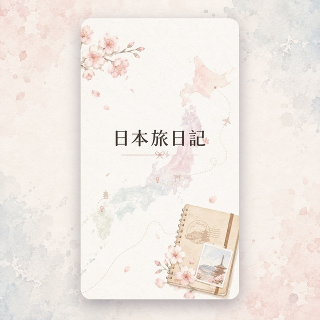
日本旅日記日本の旅を記録しようぷろ @misoclub
LINEスタンプも16種類つくってます🎨 使ってくれたらうれしい！
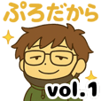
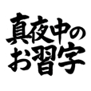
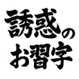
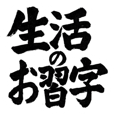
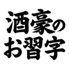
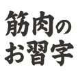
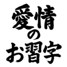
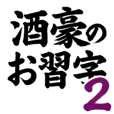
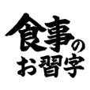
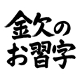
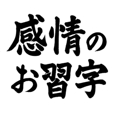
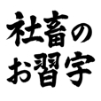
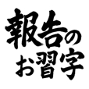
LINE STOREで見る ↗フリーBGM工房 @freebgmfactory
YouTubeでフリーBGMも投稿してます🎵 無料DLできるので作業のおともにどうぞ。
フリーBGM工房@freebgmfactory · チャンネルを見る ↗